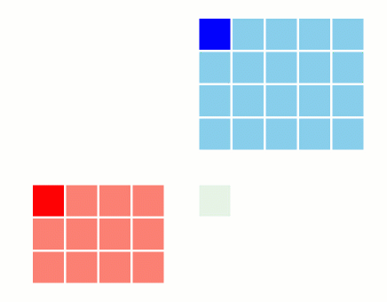

FlashAttention: Fast and Memory-Efficient Exact Attention with IO-Awareness(Flash Attention )

1 Preliminary
在开始之前，我们需要先了解一下以下几个概念，以便我们更好的理解Flash Attention
1.1 Online Softmax
Online Softmax（也叫 streaming softmax / one-pass softmax statistics）指的是：你不需要先把整行 logits \(s_1,\dots,s_D\) 全部存下来再做 softmax，而是一边读入（或一边计算）logits，一边更新必要的统计量，最后得到 softmax 的归一化因子；在需要输出概率时再用这些统计量把每个 logit 变成概率。
我们知道，对于一行向量 \(s \in \mathbb{R}^{D}\), 对于数值稳定的Softmax，我们要先减去它的 max value，这就导致了，对于计算softmax值，我们需要遍历3次这个数组。而Online Softmax则在保持原来的遍历两步的基础上，同时保持Max Softmax的特性。
要实现这个概念的核心做法就：在遍历过程中，维护两个变量： - m：当前遍历过的logits的最大值 - l：当前遍历过的logits的归一化因子（即 \(\sum_{j=1}^{i} \exp(s_j - m)\)）
具体的更新公式如下：
\[ \begin{split} m_{new} & = \max(m, s_i) \\ l & = l \cdot \exp(m - m_{new}) + \exp(s_i - m_{new}) \\ m & = m_{new} \end{split} \]
下面是Python的实现代码：
def online_softmax(x):
m, l = float("-inf"), 0.0
for i in range(len(x)):
m_new = max(m, x[i])
l = l * math.exp(m - m_new) + math.exp(x[i] - m_new)
m = m_new
softmax_values = [0.0] * len(x)
for i in range(len(x)):
softmax_values[i] = math.exp(x[i] - m) / l
return softmax_values至于为什么这个方法是正确的，我们可以通过数学归纳法来证明： - Base Case: 当只遍历了第一个元素 \(s_1\) 时，显然 \(m = s_1\)，\(l = \exp(s_1 - s_1) = 1\)，此时 softmax 计算正确。 - Inductive Step: 假设在遍历到第 \(i-1\) 个元素时，\(m\) 和 \(l\) 已经正确地反映了前 \(i-1\) 个元素的最大值和归一化因子。现在考虑第 \(i\) 个元素 \(s_i\)： - 如果 \(s_i > m\)，则新的最大值 \(m_{new} = s_i\)，归一化因子更新为： \[ l_{new} = l \cdot \exp(m - s_i) + \exp(s_i - s_i) = l \cdot \exp(m - s_i) + 1 \] - 如果 \(s_i \leq m\)，则最大值保持不变 \(m_{new} = m\)，归一化因子更新为： \[ l_{new} = l \cdot \exp(m - m) + \exp(s_i - m) = l + \exp(s_i - m) \] 我们知道 \(\ell\) 到遇到第 \(i\) 个元素时，在加上第 \(i\) 个元素的贡献之前，要根据当前的最大值进行调整，重新缩放之前的和，以确保数值稳定性。
在这两种情况下，更新后的 \(m_{new}\) 和 \(l_{new}\) 仍然正确地反映了前 \(i\) 个元素的最大值和归一化因子。因此，通过数学归纳法，我们证明了该在线算法在遍历完整个数组后，能够正确计算出 softmax 的归一化因子。
1.2 Recomputing
Recomputing 是一种以计算换内存的技术，它的核心思想是：在前向传播时，不保存某些中间结果，而是在反向传播时重新计算这些结果，从而节省内存空间。
我们知道，在反向传播时，需要用到前向传播中的一些中间结果来计算梯度。如果我们在前向传播时保存了所有的中间结果，那么会占用大量的内存空间。通过 Recomputing，我们可以选择性地不保存某些中间结果，而是在反向传播时重新计算它们。举个例子：假如我们有一个MLP层\(y=W_2\cdot \sigma(W_1 \cdot x)\)，常规的做法是，在前向传播时，保存 \(h=W_1 \cdot x\) 和 \(a=\sigma(W_1 \cdot x)\) 的结果，以便在反向传播时计算梯度：\(\frac{\partial L}{\partial W_2} = d y \, a^\top\) 和 \(\frac{\partial L}{\partial W_1} = (W_2^\top d y) \odot \sigma'(a) \, x^\top\)。但是，如果我们使用 Recomputing，我们可以选择不保存 \(a = W_1 \cdot x\) 和 \(\sigma(a)\)，而是在反向传播时重新计算它们。这样，我们就节省了内存空间，但需要额外的计算时间来重新计算这些中间结果。
这种技术的好处就是，减少了内存的使用，同时降低了读写内存的带宽需求，从而提升了整体的计算效率。
通过PyTorch 的 torch.autograd.Function，我们可以很方便地实现 Recomputing。下面是一个简单的例子：
1.3 GPU’s Memory Model
在理解 Flash Attention 之前，我们需要先了解一下 GPU 的内存模型。在这里，主要介绍一下 GPU 的几种主要内存类型：
- High Bandwidth Memory (HBM): 这是 GPU 上的主要内存类型，具有高带宽和较低的延迟。HBM 通常用于存储大规模的数据，如模型参数和输入数据。
- SRAM: 这是 GPU 上的片上内存，具有非常高的带宽和低延迟。SRAM 通常用于存储临时数据，如中间计算结果。(SRAM 还可以细分成 L1 Cache 和 L2 Cache， Register， Shared Memory 等在这里我们统称为 SRAM)
因此我们希望，尽可能多的计算在 SRAM 上完成，减少对 HBM 的读写，从而提升整体的计算效率。
1.4 Tiling

1.5 Matrix Calculus Cheatsheet
在这里介绍一些常用的矩阵微积分公式，以便我们在后续的推导中使用：
| \(O=PV, \text{where } O \in \mathbb{R}^{m \times n}, P \in \mathbb{R}^{m \times k}, V \in \mathbb{R}^{k \times n}\) |
| \[ \frac{\partial L}{\partial P} = \frac{\partial L}{\partial O} V^\top, \quad \frac{\partial L}{\partial V} = P^\top \frac{\partial L}{\partial O} \] |
\(P = \text{softmax}(S), \text{where } P \in \mathbb{R}^{m \times n}, S \in \mathbb{R}^{m \times n}\)
\[ \frac{\partial L}{\partial S} = P \odot \left( \frac{\partial L}{\partial P} - \text{row\_sum}\left(P \odot \frac{\partial L}{\partial P}\right) \right) \]
其中：\(\odot\) 表示逐元素乘法，\(\text{row\_sum}(\cdot)\) 表示对每一行求和并广播。